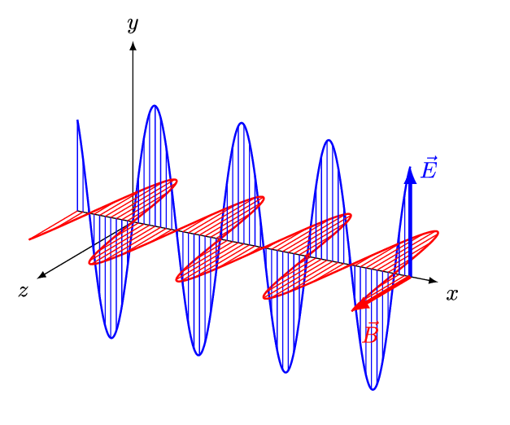
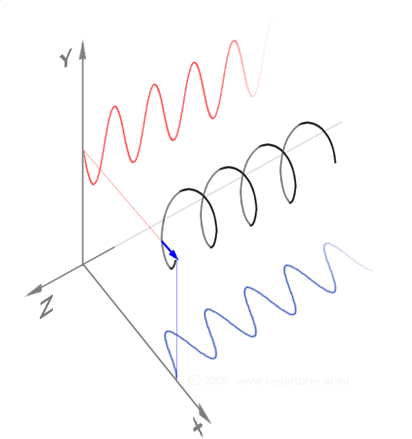

Project overview¶
The project is design to prob the antenna system.
Stage 1¶
Problem statement¶
We can start with a fairly simple case of just one point of emission in the ionosphere, at a certain altitude and location, and three antennas on the ground. Using that data we should then be able to go backwards and find the position of the source. If we assume the source is at infinity, we can calculate the direction from the phase alone. If we use the amplitude data we should also be able to find its distance, although I don’t think that will be possible in real life due to the lack of enough sig figs in the amplitude measurement. But we could find out how many sig figs would be needed.
This test data can be used to test simple data analysis. With one source the time series at an antenna should be a 5.1-MHz sine wave with a corresponding frequency spectrum. With two sources at 5.1 MHz we should see a change in amplitude and phase depending on the phase difference. With two sources at close but different frequencies we should see two lines in the spectrum and beating in the time series. Polarization can be added to the sources and we can test polarization analysis. The frequency band can be filtered, the time samples could be integrated, and the source emission can be limited in time as if it were a radar reflection. And so on. With things like these applied to all sources and all antennas we can do many tests of radio and radar imaging.
The information about the antenna and source are stored in two txt files. These files can be loaded using reading_files.py.
Assumptions¶
A transverse plane wave
Medium¶
Free space: homogeneous isotropic non-attenuating medium
No background electric and magnetic fields.
No scattering or absorption
Homogeneous electromagnetic wave equation
Antenna¶
The antennas, in an L shape with 50-m legs and 3.8 m arms, at the cartesian coordinates \((x,y,z)\) as follow:
Please look at the figure:

The red point is the source and green points are antennas. For every source-antenna set, the second reference frame (little black one) is rotated so that its z direction is along the ray path from the source to the antenna.¶
The origin is \((0,0,0)\), so the antennas are pretty close to the origin. It’s convenient that they are at positive offsets, because as we add more antennas it gets more confusing if there are also negative offsets.
Antenna data, the position of the antenna, will be loaded from a txt file .
Sources¶
To begin with the source could for example be at \(s = (5000,10000,200000)\) in meters i.e. \(x = +5\) km, \(y = +10\) km, and \(z = 200\) km.
We can say the source amplitude is \(A_s = 1\) and constant, and the source phase \(\theta_s = 0\) at \(t = 0\). To know the phase vs time we need to know the emission frequency. We could start with 5.1 MHz.
So we are starting with a single point of emission, somewhere in the ionosphere, and three antennas, and we want to calculate the amplitude and relative phase at each antenna. Then we can expand to two emission points, with different locations and amplitudes, and more antennas. For the total signal at each antenna, the signals from each emission point would be summed as complex numbers. With multiple sources and multiple antennas we can use this computed data as a test input to the imaging algorithm.
The information of the source/s, will be loaded from a txt file . The file may have a single row of information, indicating single source or multiple rows for multi-source situation.
Solution¶
The wave propagate as a plane wave in a free space. Therefore, the wave form considered in a complex format with exponential part as following:
where r is the vector of propagation path, \(\mathbf{E_0}\) is the vector of electric field amplitude, \(\mathbf{k}\) is the vector of wavenumber and \(\mathbf{\omega}\) is angular frequency. The electric and magnetic fields are pepedicular to each other and perpendicular to the wave propagation direction. Please look at the picture.
{kind=link}
Therefore, the wave considered as propagating at z direction. The amplitude of electromagnetic fields are [Ex,Ey,0] and [Bx,By,0] and the wavenumber is [0,0,Kz]. For free space, the path, r, is a straight line from the source to the antenna. To make is simple, the r assumed to be at the direction of a new reference frame shown in the following picture. For each couple of source-antenna this reference frame will be adjusted. Finally, by rotating back this reference frame to the original reference frame the superposition of fields cab be obtained at every antenna for all sources.
To calculate the wave:
For every source the waveform calculated for every antenna at the rotated frame of source-antenna.
For every antenna, the superposition of all waves coming from every source obtained by calculating the projection of other wave vectors on one of them.
Local intensity¶
where \(E\) is the complex electric filed.
Voltage¶
The voltage can be obtained from:
where \(l\) is the length.
Polarization¶
{kind=link}
The “polarization” of electromagnetic waves refers to the direction of the field. The polarization can be calculated by Jones vector.
where the \(\Psi\) is the jones vector and \(\alpha\) is phase angles \(\alpha_x\) , \(\alpha_y\). In linear polarization, the fields oscillate in a single direction and phase angles are are equal but the magnitude of the amplitude components are changing. In circular or elliptical polarization, the fields rotate at a constant rate in a plane as the wave travels.
{kind=link}
Code¶
File description¶
reading_files.py: This file contains a program that takes file names of antenna and source information (03-tri-2.txt and source2.txt) and returns the information in a DataFarme format to be used in the main program.
03-tri_2.txt: antenna information
source2.txt: source information
parameters.py: This file contains some parameters
multi_source: Contains the main class and function to calculate the results for the waves received at the location of antenna from the source/s.
multi_source_received_waves: The main program file.
visualization: Include codes for plotting and visualization purposes.
How to run?¶
Please copy and past all files (mentioned in the file description) to a directory. Then, in that directory, you can run the main program by typing python multi_source_receieved_waves.py.
{kind=link}
{kind=link}